Proportion
Every room begins with a relationship between body, scale and horizon. Nothing is oversized without reason.
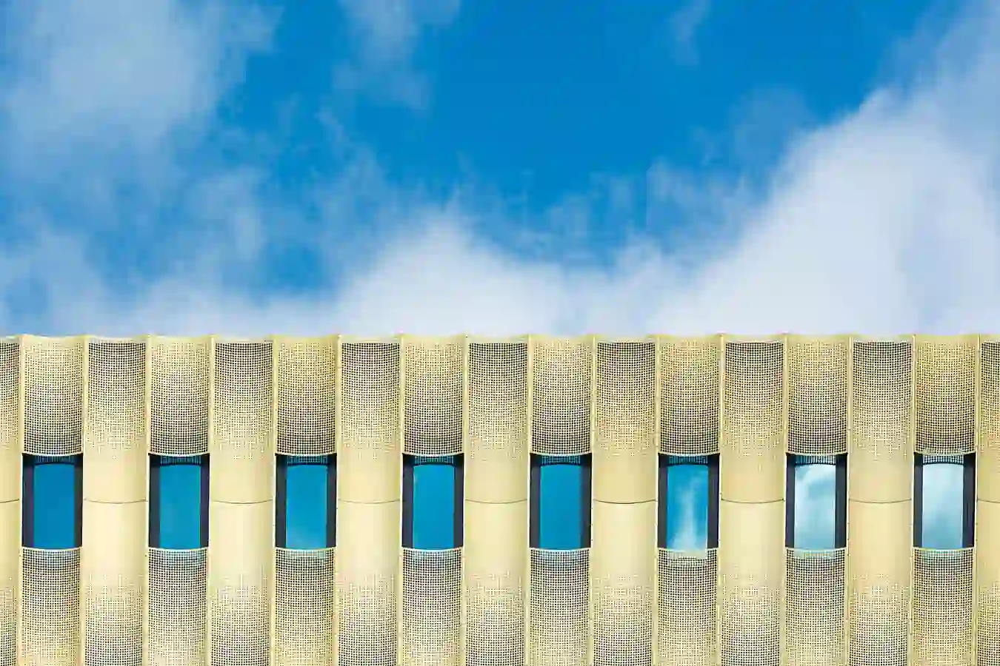
Architecture Studio — London
We design buildings that hold their ground for a century — drawn by hand, proven by model, built to last.
Our Philosophy
Stackly was founded on a simple conviction: that architecture should outlast its architects. Every line we draw answers to material, climate, and the slow rhythm of the people who will live inside.
From a single staircase to a whole urban block, our work begins with a hand-drawn section and ends with a building that asks nothing more of its occupants than to inhabit it well. We prize restraint over spectacle, shadow over glare, and the quiet authority of a wall built to stand.
Read our story →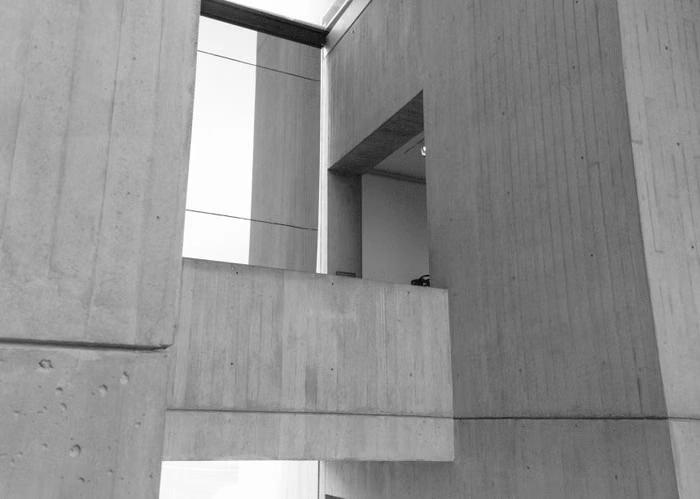
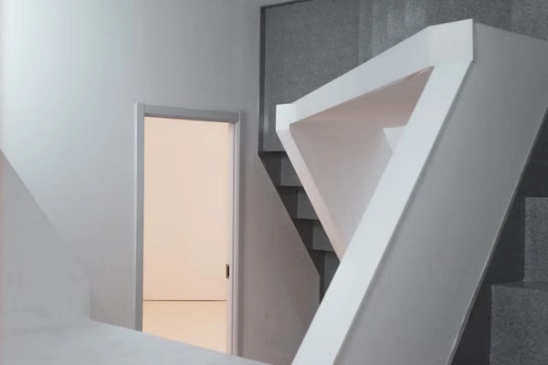
The Manifesto
We believe the strongest buildings are felt before they are understood — through proportion, temperature, shadow, texture and the movement of daylight.
Every room begins with a relationship between body, scale and horizon. Nothing is oversized without reason.
Materials are selected for how they age, weather, absorb light and reveal the passage of time.
Daylight is treated as a building material — shaped, filtered and allowed to move through the architecture.
We design for the second owner, the third generation and the decades that follow completion.
Material Library
Materials are never selected from a catalogue alone. We study their weight, texture, ageing and relationship with natural light.
Quiet mass, thermal stability and a surface that becomes richer with time.
A tactile counterpoint to stone and concrete, selected for grain, tone and longevity.
Used sparingly where touch and repeated movement create a natural patina.
Architecture rooted in its landscape through material extracted from the surrounding ground.
Spatial Studies
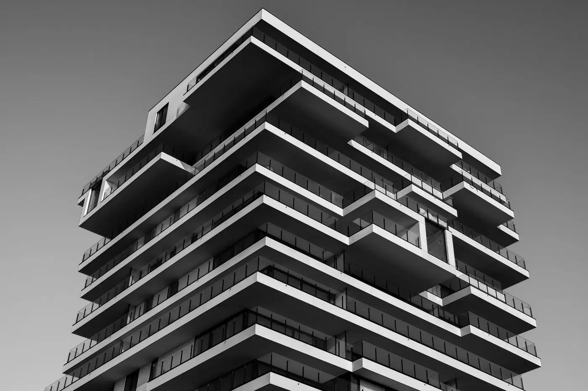
Windows, apertures and courtyards are positioned to let the character of each room change throughout the day.
Explore study ↗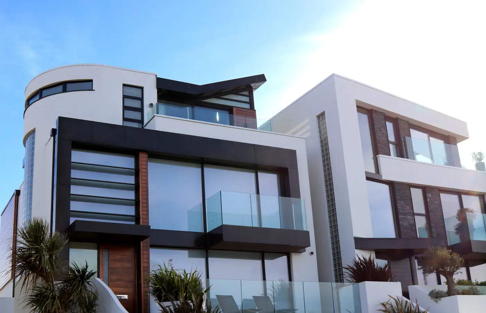
Solid walls and carefully placed voids create architecture that feels grounded without becoming heavy.
Explore study ↗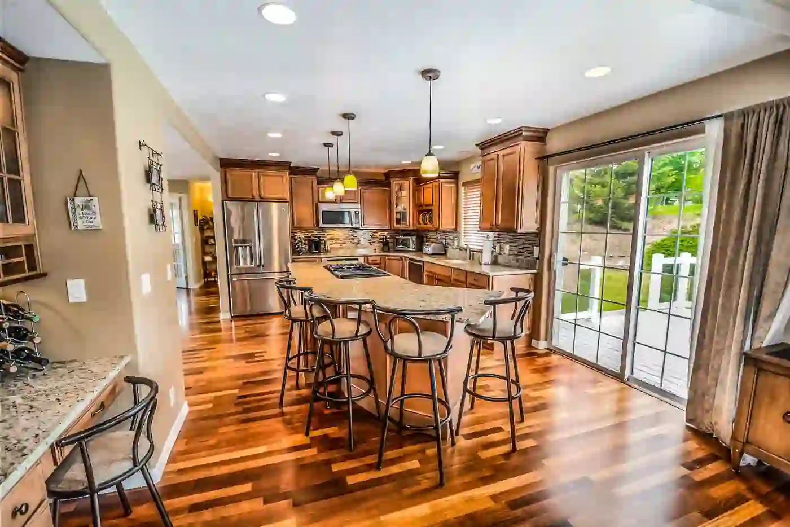
The boundary between architecture and landscape should feel deliberate rather than absolute.
Explore study ↗From the Studio
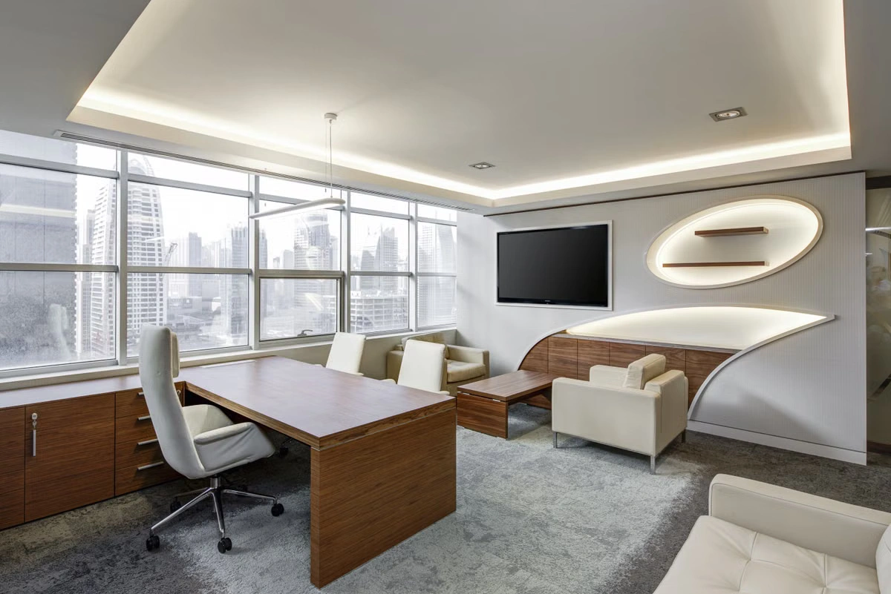
On designing less, choosing materials carefully and allowing buildings to become quiet over time.
Read article →How weather, touch and daylight transform a surface throughout its life.
Read article →A study of openings, shadows and the changing atmosphere of interior spaces.
Read article →Selected Work
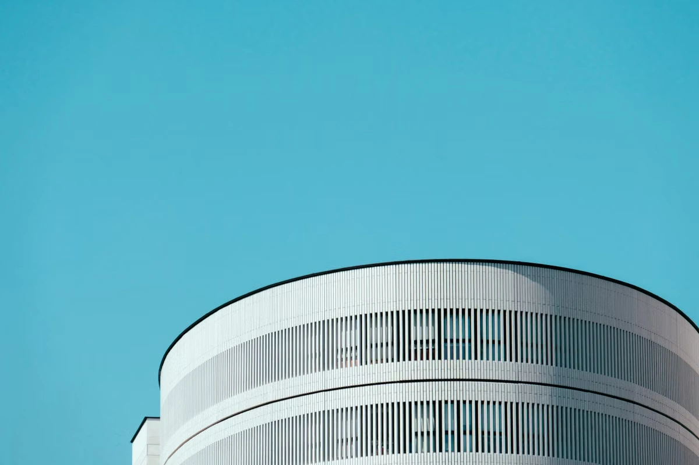
A cylindrical gallery carved into a coastal hillside, lit only by a single overhead oculus.
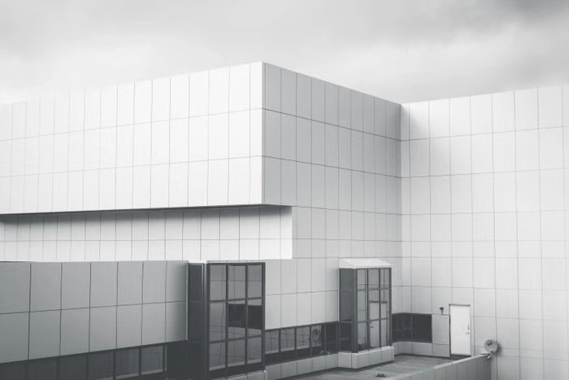
A family residence wrapped in stacked white concrete ledgers.
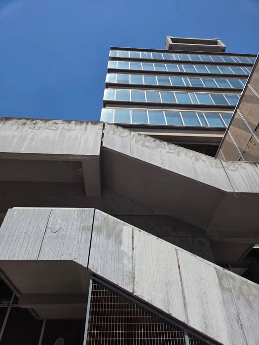
A monolithic concrete stair threading a four-storey townhouse.
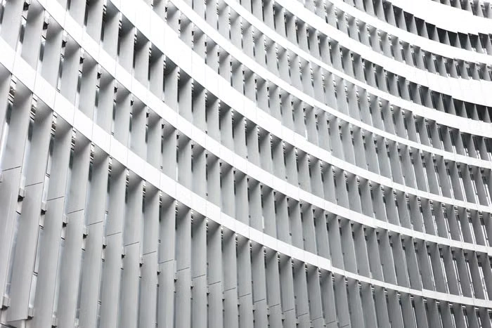
An adaptive-reuse workplace behind a rhythmic geometric screen.
A modern interior design project featuring custom furniture and fixtures.
How we work
We spend weeks on site before drawing a line — reading light, slope, and the life already there.
Hand sections, pencil plans, and physical models. Ideas are tested in foam before they reach a screen.
Structural models, daylight studies, and material mock-ups. Nothing is built that hasn't already stood on the table.
Our architects live on site. We oversee every pour, joint, and finish until the keys change hands.
In their words
“They gave us a house that changes with the hour. Morning light walks down one wall; by evening it has crossed the floor. It is architecture you feel before you see.”
“Stackly treated our gallery as a problem of silence — how to make a room quiet enough for art to speak. The result is the most-respected space we have ever opened.”
“The stair they built for us is the heart of the house. Guests stop talking when they reach it. That is what good architecture does — it pauses people.”
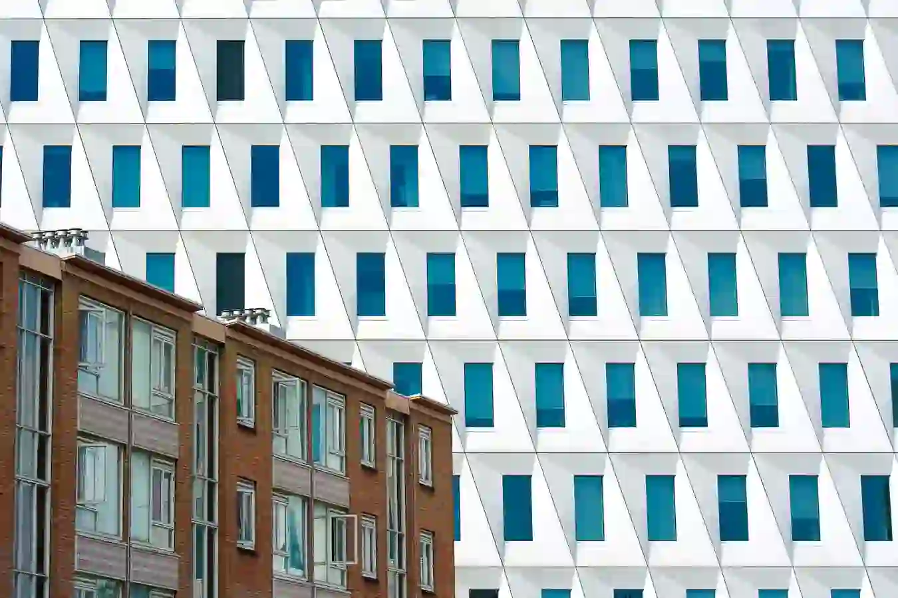
Start a project
Tell us about your site, your timeline, and the life you want the building to hold. We take on a handful of commissions each year.
Begin a conversation →